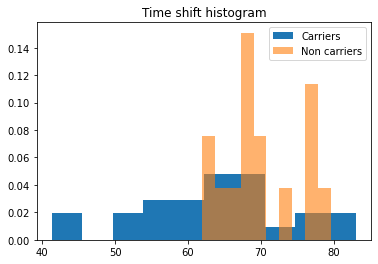
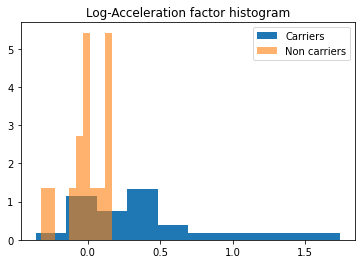

import os, sys
import numpy as np
import pandas as pd
import matplotlib.pyplot as plt
import random
from scipy import stats
%matplotlib inline
leaspy_path = '/network/lustre/dtlake01/aramis/users/juliette.ortholand/leaspy/' #TO CHANGE
sys.path.append(leaspy_path)
from leaspy import Leaspy, IndividualParameters, AlgorithmSettings, Data
Load#
df_normed = pd.read_csv("simulated_data-corrected.csv")
df_normed = df_normed.astype({'ID':'string'})
df_normed.set_index(['ID', 'TIME'], inplace=True)
print(len(df_normed))
df_normed.head()
1997
| MDS1_total | MDS2_total | MDS3_off_total | SCOPA_total | MOCA_total | REM_total | PUTAMEN_R | PUTAMEN_L | CAUDATE_R | CAUDATE_L | PUTAMEN | ||
|---|---|---|---|---|---|---|---|---|---|---|---|---|
| ID | TIME | |||||||||||
| GS-001 | 71.354607 | 0.112301 | 0.122472 | 0.171078 | 0.160001 | 0.275257 | 0.492485 | 0.780210 | 0.676774 | 0.622611 | 0.494641 | 0.728492 |
| 71.554604 | 0.140880 | 0.109504 | 0.118693 | 0.135852 | 0.380934 | 0.577203 | 0.751444 | 0.719796 | 0.618434 | 0.530978 | 0.735620 | |
| 72.054604 | 0.225499 | 0.270502 | 0.061310 | 0.211134 | 0.351172 | 0.835828 | 0.823315 | 0.691504 | 0.717099 | 0.576978 | 0.757409 | |
| 73.054604 | 0.132519 | 0.253548 | 0.258786 | 0.245323 | 0.377842 | 0.566496 | 0.813593 | 0.787914 | 0.770048 | 0.709486 | 0.800754 | |
| 73.554604 | 0.278923 | 0.321920 | 0.143350 | 0.223102 | 0.292768 | 0.741811 | 0.888792 | 0.852720 | 0.797368 | 0.715465 | 0.870756 |
Create cofactor#
path_model = os.path.join(os.getcwd(),'..', '..',"TP2_leaspy_beginner/outputs/")
leaspy = Leaspy.load(path_model + 'model_parameters.json')
col = ["MDS1_total", "MDS2_total", "MDS3_off_total"]
data = Data.from_dataframe(df_normed.loc['GS-161':][col])
##SET PARAMETERS
settings_personalization = AlgorithmSettings('scipy_minimize', progress_bar=True)
##PREDICTIONS
ip = leaspy.personalize(data, settings_personalization)
|########################################| 40/40 subjects
The standard deviation of the noise at the end of the personalization is:
MDS1_total: 0.0468
MDS2_total: 0.0492
MDS3_off_total: 0.0578
Personalization scipy_minimize took: 8s
# —— Convert individual parameters to dataframe
df_ip = ip.to_dataframe()
df_ip["tau"].hist()
<AxesSubplot:>

df_ip["xi"].hist()
<AxesSubplot:>

df_cof = pd.DataFrame(0, columns = ['MUTATION'],index = df_ip.index)
for i in df_cof.index :
if df_ip["tau"].loc[i]>70 and df_ip["xi"].loc[i]<0:
df_cof.at[i,'MUTATION'] = 1
elif df_ip["tau"].loc[i]>65 and df_ip["xi"].loc[i]<0.25:
rd = random.randint(1, 3)
if rd != 3 :
df_cof.at[i,'MUTATION'] = 1
elif df_ip["tau"].loc[i]>60 and df_ip["xi"].loc[i]<0.25:
rd = random.randint(1, 3)
if rd == 3 :
df_cof.at[i,'MUTATION'] = 1
# —— Convert individual parameters to dataframe
df_ip = ip.to_dataframe()
# —— Merge with cofactors
df_ip = df_ip.join(df_cof)
# —— Separate the individual parameters with respect to the cofactor
carriers = df_ip[df_ip['MUTATION'] == 0.]
non_carriers = df_ip[df_ip['MUTATION'] == 1.]
# —— Plot the time shifts in carriers and non-carriers
plt.title('Time shift histogram')
plt.hist(carriers['tau'], density=True, label='Carriers')
plt.hist(non_carriers['tau'], density=True, alpha=0.6, label='Non carriers')
plt.legend()
plt.show()
# —— Plot the acceleration factor in carriers and non-carriers
plt.title('Log-Acceleration factor histogram')
plt.hist(carriers['xi'], density=True, label='Carriers')
plt.hist(non_carriers['xi'], density=True, alpha=0.6, label='Non carriers')
plt.legend()
plt.show()


# —— Student t-test (under the asumption of a gaussian distribution only)
print(stats.ttest_ind(carriers['tau'], non_carriers['tau']))
print(stats.ttest_ind(carriers['xi'], non_carriers['xi']))
# —— Mann-withney t-test
print(stats.mannwhitneyu(carriers['tau'], non_carriers['tau']))
print(stats.mannwhitneyu(carriers['xi'], non_carriers['xi']))
Ttest_indResult(statistic=-2.2232608961456144, pvalue=0.032220725282898224)
Ttest_indResult(statistic=3.1589836303335073, pvalue=0.0031005639237972477)
MannwhitneyuResult(statistic=110.0, pvalue=0.015731576990963104)
MannwhitneyuResult(statistic=78.0, pvalue=0.001162797898390688)
df_cof.to_csv("cof_leaspy1.csv")